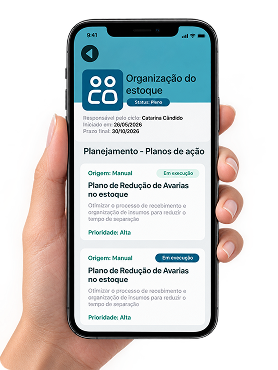
Entenda e planeje
O problema é analisado e o planejamento é estruturado, definindo causas, objetivos e ações para solucioná-lo.
A plataforma PDCA que transforma planejamento em ação, acompanhamento em aprendizado e resultados em crescimento.
CadastrarCada etapa da metodologia otimizada em um único lugar
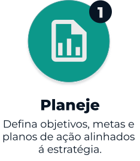
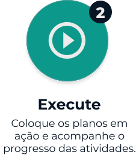
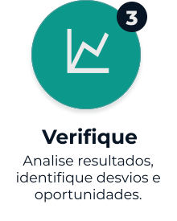
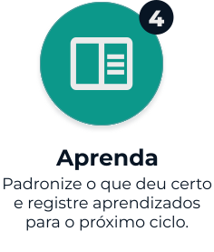
Cada etapa conectada em um único fluxo de trabalho.

O problema é analisado e o planejamento é estruturado, definindo causas, objetivos e ações para solucioná-lo.
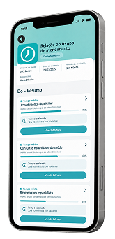
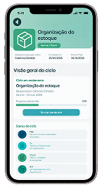
Os aprendizados são registrados e as soluções que funcionaram são transformadas em um novo padrão de trabalho.
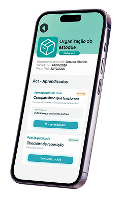
Ferramentas inteligentes, com colaboração, organização para cada etapa.
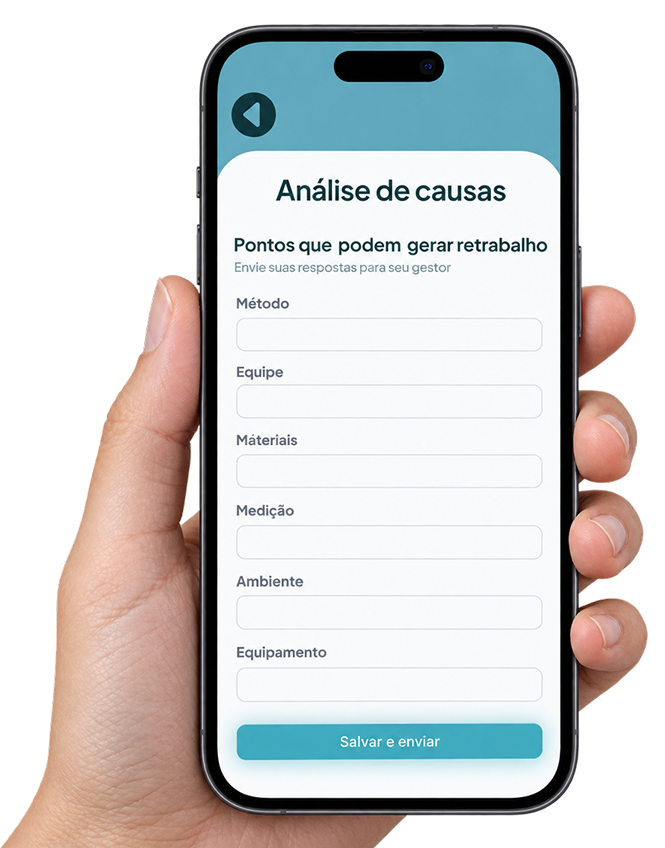
Acompanhe ações e indicadores em tempo real com dashboards intuitivos.
Gere relatórios finais completos e profissionais com um clique.
Anote ideias, aprendizados e observações importantes durante todo ciclo.
Identifique causas e facilite análises com diagramas de Ishikawa.
Alertas inteligentes para prazos e tarefas pendentes.
Descubra a causa raiz dos problemas com os 5 Porquês.
Transparência é essencial. Por isso, oferecemos planos claros e flexíveis, sem complicação, para que a sua empresa invista apenas no que precisa e acompanhe o crescimento de perto.
Recomendado:
Ideal para empresas que desejam iniciar rapidamente sem compromisso de longo prazo.
Mais economia para empresas que buscam estabilidade operacional e previsibilidade de custos.
A melhor opção para empresas que desejam maximizar resultados com o melhor custo-benefício.
O ACTA é uma plataforma baseada no ciclo PDCA que ajuda empresas e indústrias a planejar, executar, verificar e aprender com seus processos, tudo em um único fluxo de trabalho.
Não. O ACTA trabalha apenas com as informações que a sua equipe decide registrar nos ciclos, tarefas e formulários, sem exigir acesso a dados sensíveis da empresa.
PDCA (Plan, Do, Check, Act) é uma metodologia de melhoria contínua em quatro etapas: planejar, executar, verificar e agir/aprender com os resultados.
Porque ele reúne planejamento, acompanhamento, ferramentas de análise e aprendizados em um só lugar, tornando a gestão de problemas e melhorias mais prática e eficiente.
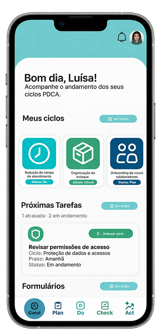
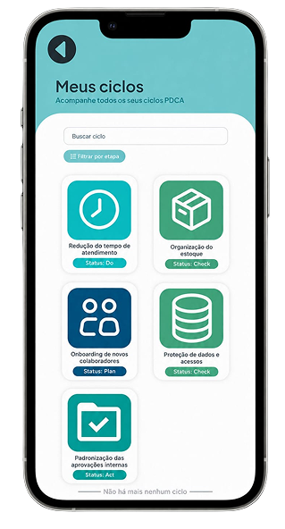
O ACTA surgiu a partir de um projeto interdisciplinar da nossa escola, com foco na ODS 12 (Consumo e Produção Responsáveis). O objetivo era utilizar a tecnologia para tornar empresas e indústrias mais eficientes, responsáveis e sustentáveis. Durante o projeto, identificamos um problema comum: a falta de ferramentas práticas para gerenciar problemas e implementar melhorias de forma mais eficiente.
Mais inteligência para cada etapa do ciclo.
A IA do ACTA acompanha todo o ciclo, oferecendo suporte à tomada de decisões, previsões de resultados e uma visão geral dos processos. Ela também resume formulários, ciclos e lições aprendidas, transformando informações em insights rápidos e úteis.
Para administradores, permite ainda criar conteúdos e recursos de forma prática, tornando a gestão mais ágil e eficiente.
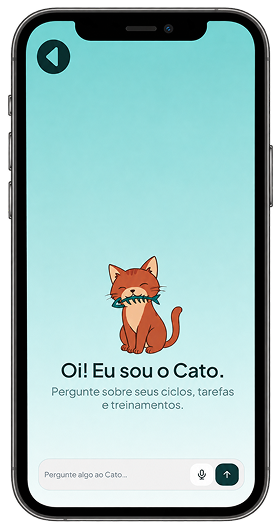
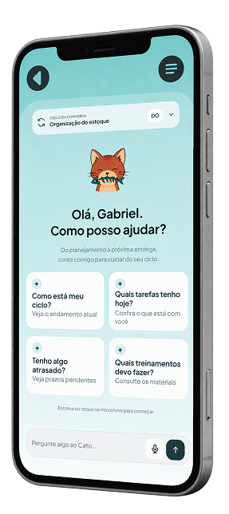
Para conhecer melhor o ACTA, é importante entender aquilo em que acreditamos. Conheça os valores que orientam nossas decisões, inspiram nossas ações e nos impulsionam a evoluir continuamente, transformando planejamento em resultado.
Criamos uma plataforma prática e intuitiva.
Buscamos soluções modernas para transformar a gestão.
Valorizamos o trabalho em equipe e a troca de ideias.
Promovemos processos mais eficientes e responsáveis.